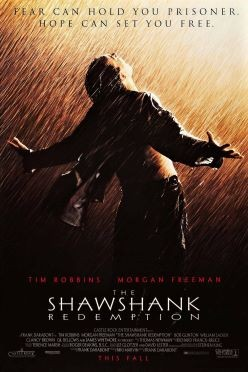
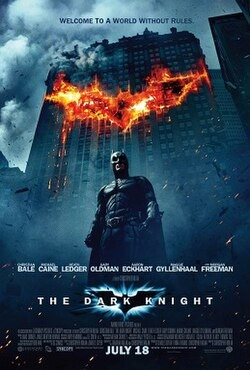
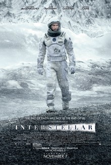
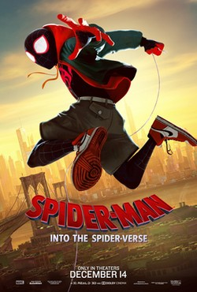
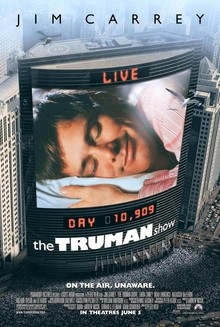
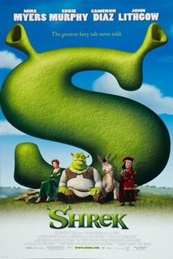
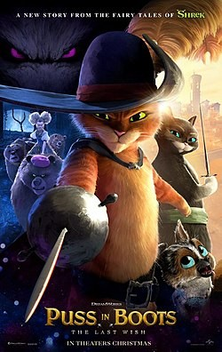

CINEPICK / Ratings
Two ratings. Your call.
Compare the scores of the films in our collection.
| # | Film | Year | IMDb | Кинопоиск | Runtime |
|---|---|---|---|---|---|
| 01 |  The Shawshank RedemptionDrama | 1994 | 9.3 | 9.1 | 142 min |
| 02 |  The Dark KnightAction · Thriller | 2008 | 9.1 | 8.5 | 152 min |
| 03 |  InceptionSci-fi · Thriller InceptionSci-fi · Thriller | 2010 | 8.8 | 8.7 | 148 min |
| 04 |  InterstellarSci-fi · Drama | 2014 | 8.7 | 8.7 | 169 min |
| 05 |  Spirited AwayAnimation · Adventure Spirited AwayAnimation · Adventure | 2001 | 8.6 | 8.6 | 124 min |
| 06 |  Spider-Man: Into the Spider-VerseAnimation · Action | 2018 | 8.4 | 8.2 | 117 min |
| 07 |  The Truman ShowDrama · Comedy | 1998 | 8.2 | 8.3 | 103 min |
| 08 | The Grand Budapest HotelComedy · Adventure | 2014 | 8.1 | 8.0 | 99 min |
| 09 |  ZootopiaAnimation · Mystery ZootopiaAnimation · Mystery | 2016 | 8.0 | 8.3 | 108 min |
| 10 |  Knives OutMystery · Comedy Knives OutMystery · Comedy | 2019 | 7.9 | 8.2 | 130 min |
| 11 |  ShrekAnimation · Comedy | 2001 | 7.9 | 8.2 | 90 min |
| 12 |  Puss in Boots: The Last WishAnimation · Adventure | 2022 | 7.8 | 8.1 | 102 min |
This ranks our 12-film collection, not all movies. Ratings may change. About the sources